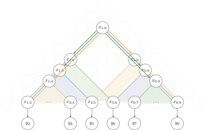

Recursive Bayesian Networks
Inside Probabilities
The inside probability
Important
is the probability of generating the subsequence of terminal variables
from the non-terminal variable
 with all intermediate variables marginalised out.
with all intermediate variables marginalised out.
Simple Binary Case
This can be best understood by looking at a simple example with a single non-terminal template variable and a binary split transition:
The inside probability is the probability of generating the subsequence of terminal variables from the non-terminal variable . Its value can be computed recursively by looking one step ahead in the generating process and considering all possibilities. In this simple case, the next step will always produce two child variables and the different possibilities are simply which part of the sequence is generated by which of the children. This includes the three possibilities illustrated above:
…
orange [split at
]: the left child generates ; the right child generates
blue [split at ]: the left child generates ; the right child generates
green [split at ]: the left child generates ; the right child generates .
…
but splitting points can go from 2 up to 8 (). These different possibilities have to be summed up and the intermediate variables (the left and right child) have to be marginalised out:
Here, the sum runs over all possible splitting points and the integrals marginalise out the intermediate (child) variables. The inside probabilities and are the recursive part and “hide” all subsequent generation steps from the children on. Finally, the particular binary transition that we considered here (denoted by ) is usually only one of multiple possible transitions (at least one other transition is needed to generate terminal variables). We therefore have to multiply everything by the probability of taking this particular transition, which is the first term with the structural distribution .
General Inside Probabilities
If the simple binary case is clear, it is much easier to understand the more complex general case, which differs in the following.
Multiple template variables: So far, we had a single non-terminal template variable  that could be instantiated at any possible location in the parse chart (). In other words, the set of non-terminal template variables contained a single variable
that could be instantiated at any possible location in the parse chart (). In other words, the set of non-terminal template variables contained a single variable  . However, in general, may contain an arbitrary number of non-terminal template variables . The same is true for the set of terminal template variables .
. However, in general, may contain an arbitrary number of non-terminal template variables . The same is true for the set of terminal template variables .
Multiple possible transitions: As mentioned above, even in the simple binary case, there has to be at least one other transition to generate the terminal variables (as the binary split only generates two new non-terminal variables). In general, there may be an arbitrary number of transitions  from a particular non-terminal variable and each transition may involve any number of terminal or non-terminal variables .
from a particular non-terminal variable and each transition may involve any number of terminal or non-terminal variables .
Multiple splitting points: If a transition generates more than two variables, there is more than one splitting point. To be precise, if a transition generates  variables, there are
variables, there are  splitting points, which we can denote by .
splitting points, which we can denote by .
Taking this into account, the general form of the inside probabilities for the non-terminal variable is given by
Important
We denote the second line as inside marginals 

where the subscript indicates the dependency on .
This is implemented in Transition.inside_marginals(), which returns
an array or iterable over all possible inside marginals for the
different (combinations of) splitting points.
We denote the summation in the first line as inside mixture. It uses the inside marginals
to compute the (multi-)sum over possible (combinations of) splitting
points as well as the sum over possible transitions weighted by the structural distribution.

This is implemented in Cell.inside_mixture().
To explain the different parts of the equation in more detail, we have:
The sum over all possible transitions for the given variable, weighting each transition by its probability to occur, given by the structural distribution:
The multi-sum over all possible combinations of splitting points. For the simple binary case, where we only have a single splitting point, this reduces to the simple sum from above. A larger number of splitting points quickly becomes computationally expensive as the number of possibilities grows exponentially (and is also more difficult to vectorise):

The multi-integral to marginalise out the set of generated non-terminal (child) variables (denoted by ). Importantly, this does not include any terminal variables that may have been generated along with the non-terminal variables:

The actual transition probability. The generated variables may contain both non-terminal variables and terminal variables:
The recursive part containing the product of inside probabilities of all generated non-terminal variables.

Marginal Likelihood
The marginal likelihood  is the probability of the observed data after marginalising out all latent variables of the model. This is the quantity typically used to measure how well a model describes the data and model parameters are optimised to minimise the marginal negative log likelihood . We obtain the marginal likelihood from the inside probabilities at the root node
is the probability of the observed data after marginalising out all latent variables of the model. This is the quantity typically used to measure how well a model describes the data and model parameters are optimised to minimise the marginal negative log likelihood . We obtain the marginal likelihood from the inside probabilities at the root node
Important

where is the prior transition that generates a non-terminal variable of type from scratch and
is the probability of generating a particular template variable of type . Note that this is fundamentally
the same as for normal transitions ( is the equivalent of the structural distribution), except that some
things simplify as we do not condition on another non-terminal variable and do not have to consider possible splitting points
as we are generating only a single new non-terminal variable. Computing marginal likelihoods from the inside probabilities
at the root node is implemented in Prior.marginal_likelihood(),
which essentially corresponds to combining the Transition.inside_marginals()
and Cell.inside_mixture() methods for the special case of the prior.
Parsing
To compute marginal likelihoods, we have to recursively evaluate the equation for general inside probabilities
to obtain their values at the root node. This is done by the RBN.inside() method.
It iterates over all inside variables using inside_schedule(),
delegating the marginalisation of variables to Transition.inside_marginals()
and computing mixtures to Cell.inside_mixture(), before returning the
marginal likelihood computed via Prior.marginal_likelihood().